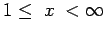
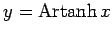

Die Areafunktionen sind die Umkehrfunktionen der Hyperbelfunktionen, also die inversen Hyperbelfunktionen. Die Funktionen und  sind streng monoton, so daß jede von ihnen genau eine Umkehrfunktion besitzt; anders die Funktion die zwei Monotonieintervalle besitzt und deshalb auch zwei Umkehrfunktionen. Die Bezeichnung area (Fläche) hängt mit der geometrischen Definition der Funktion als Fläche eines Hyperbelsektors zusammen. In der Tabelle sind die Definitions- und Wertebereiche angegeben.
sind streng monoton, so daß jede von ihnen genau eine Umkehrfunktion besitzt; anders die Funktion die zwei Monotonieintervalle besitzt und deshalb auch zwei Umkehrfunktionen. Die Bezeichnung area (Fläche) hängt mit der geometrischen Definition der Funktion als Fläche eines Hyperbelsektors zusammen. In der Tabelle sind die Definitions- und Wertebereiche angegeben.
| Areafunktion | Definitionsbereich | Wertebereich | Gleichbedeutende Hyperbelfunktion |
| Areasinus |
|||
| Areakosinus |
 |
||
| Areatangens  |
|x| <1 |
||
| Areakotangens |
|x| >1 |